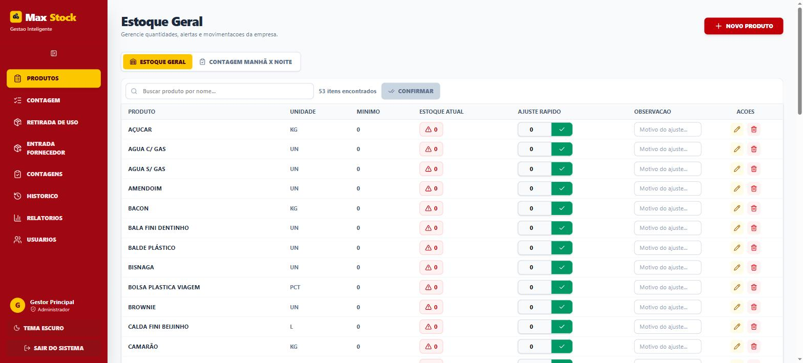

acesso público
PDF Fácil
Ferramenta que converte imagens (JPG, PNG) em PDF direto no navegador — sem enviar nenhum arquivo a um servidor. Todo o processamento acontece no lado do cliente, priorizando privacidade.
Desenvolvedor Full Stack em formação — construído sobre uma base sólida de infraestrutura de TI.
Comecei minha jornada profissional na Força Aérea Brasileira, onde passei 7 anos desenvolvendo disciplina e capacidade de resolução de problemas sob pressão — habilidades que carrego para tudo que faço hoje.
Em 2025 comecei a cursar Análise e Desenvolvimento de Sistemas na UNISUAM, com foco em desenvolvimento full stack. Pouco depois, comecei a atuar como Técnico em Suporte e Infraestrutura no CRECI-RJ — e foi na prática do dia a dia, resolvendo incidentes e automatizando tarefas repetitivas, que a teoria da faculdade ganhou sentido prático e a vontade de programar só cresceu.
Minha base de infraestrutura não ficou pra trás — ela é o que me dá uma visão completa do funcionamento computacional, do hardware até a última linha de código.
/backend
/frontend
/infra
/praticas
/ferramentas
Em estudo Mensageria com Kafka e cache com Redis — conhecimento teórico, ainda sem aplicação prática em projetos.
Alguns projetos estão de código aberto — outros foram construídos sob contrato comercial e, por isso, aparecem aqui como estudo de caso, sem exposição de código-fonte.
Ferramenta que converte imagens (JPG, PNG) em PDF direto no navegador — sem enviar nenhum arquivo a um servidor. Todo o processamento acontece no lado do cliente, priorizando privacidade.

Sistema de gestão de estoque feito sob encomenda para a loja da franquia Pipoca Mana, no Nova América Shopping: controle de estoque geral, contagem por turno (manhã/noite), retirada de uso e relatórios de reposição. Código-fonte privado — projeto comercial sob contrato.
Estudo de caso disponível sob demanda.
Monorepo com app mobile (Expo/React Native + TypeScript) e API (NestJS + Prisma + PostgreSQL) para a loja Guedes Suplementos. Código-fonte privado — projeto comercial em produção para cliente real.
Plataforma de inteligência de dados para o setor imobiliário, atualmente em desenvolvimento para uma associação profissional do setor. Projeto mantido privado até a conclusão.
Build em andamento — mais detalhes em breve.
nov/2025 — atual
CRECI-RJ
Suporte técnico presencial e remoto, administração de servidores (Windows Server, KVM), Active Directory, redes TCP/IP, firewall pfSense e automação de rotinas com PowerShell, SQL e JavaScript.
2012 — 2019
Força Aérea Brasileira
Sete anos de serviço, com formação em auxiliar administrativo — base de disciplina, organização e trabalho sob pressão que carrego até hoje.
Quer ver minha experiência completa? Visualize ou baixe a versão atualizada do meu currículo.
Aberto a oportunidades, freelas e parcerias.